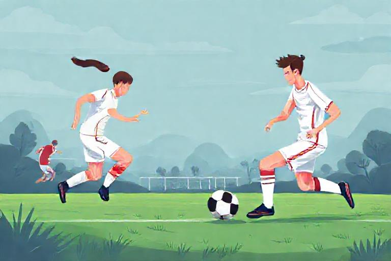

Mastering the Basics of Football: A Beginner's Guide to Ball Control and Dribbling
Category: football | Language: en
Football, often referred to as 'the beautiful game,' is a sport defined by movement, but you cannot move effectively without mastering the fundamentals of ball control. This guide is specifically designed for absolute beginners who want to feel comfortable with the ball at their feet. Ball control refers to your ability to collect a pass and keep the ball close to your body, while dribbling is the skill of moving the ball across the pitch while maintaining possession. Mastering these two areas allows you to contribute to your team’s success and prevents the common frustration of constantly losing the ball to your opponents.
To begin your journey, you need the right equipment. A standard size 5 football is the official size for players aged 12 and up, and it is what you should use to develop a proper feel for the weight of the ball. Proper footwear is essential for both performance and safety; if you are playing on natural grass, use firm-ground (FG) cleats with plastic studs to provide grip. For artificial turf, use specialized turf shoes with small rubber nubs. Ensure your laces are tied tightly and tucked in to avoid tripping or interfering with the ball’s trajectory. A flat, clear area of about five square meters is more than enough space for your initial individual practice sessions.
The most important concept for a beginner to grasp is the 'soft touch.' Instead of kicking the ball with your toes—a common mistake that offers very little control—you should use the 'laces' (the top of your foot) or the 'inside' (the arch). When you move forward, point your toes down toward the ground and gently nudge the ball with your laces. This keeps the ball within one or two steps of your body. If the ball gets more than a yard away from you, a defender can easily steal it. Think of it as 'petting' the ball forward with a series of small, controlled movements rather than striking it away from you.
To build the necessary muscle memory, start with two stationary drills: Toe Taps and Foundations. For Toe Taps, place the ball in front of you and lightly touch the top of the ball with the sole of your right foot, then hop and switch to your left foot. Aim for a steady rhythm without moving the ball from its spot. For Foundations, knock the ball back and forth between the insides of your feet as if you are passing to yourself. Keep your knees slightly bent and stay on the balls of your feet. These drills improve your balance and ensure you become comfortable using different parts of your feet without needing to look down constantly.
Once you are comfortable standing still, practice dribbling in a straight line over a distance of ten meters. Use the outside of your dominant foot to 'push' the ball forward every two steps. It is a common beginner mistake to use the inside of the foot for straight-line running, as this slows your pace and causes your hips to turn awkwardly. Keep your head up as much as possible; while you need to see the ball, you also need to see your teammates and the goals. A good rule of thumb is to glance down at the ball and then quickly look three to five meters ahead to scan the field.
Changing direction is vital for avoiding defenders and finding open space. To perform a basic 'Inside Cut,' reach slightly past the ball with your dominant foot and use the inside of your big toe to hook the ball back in the opposite direction. Alternatively, the 'Outside Cut' uses the pinky-toe side of your foot to push the ball away to the side. You can practice these by setting up two cones or water bottles five meters apart and dribbling in a figure-eight pattern. This drill forces you to use both the inside and outside of both feet to navigate the tight turns, which is a skill you will use in every match.
Beginners often fall into the trap of 'ball watching,' where they stare intensely at their feet. This leads to accidental collisions or missing an open teammate who is ready for a pass. Another frequent mistake is 'heavy-touching,' where a player gets excited and pushes the ball too far ahead, essentially passing it to the opponent. Finally, many beginners neglect their non-dominant foot. While it feels unnatural at first, practicing dribbling with your 'weak' foot for just five minutes a day will make you a much more versatile player who is significantly harder for the opposition to defend against.
Imagine a practical scenario where you are dribbling down the sideline and a defender approaches from your right. To protect the ball, you should 'shield' it by putting your body between the defender and the ball. Lean slightly into the defender using your shoulder—without pushing off—and use the foot furthest away from them to control the ball. Regarding safety, always wear shin guards during any practice that involves other players to prevent painful bruises or fractures. Before starting any session, rotate your ankles and stretch your calves to avoid the strains associated with the quick, lateral movements of football.
Developing elite ball control takes time, but the benefits are immediate. You will feel more confident on the pitch and find the game much more enjoyable when you aren't fighting to keep the ball under control. Consistency is the key to improvement; even ten to fifteen minutes of daily contact with the ball will significantly improve your touch within a few weeks. Your next practical step is to find a wall or a partner and practice 'trapping'—the act of receiving a pass and immediately transitioning into a dribble. This will help you link your new control skills with the flow of a real game.